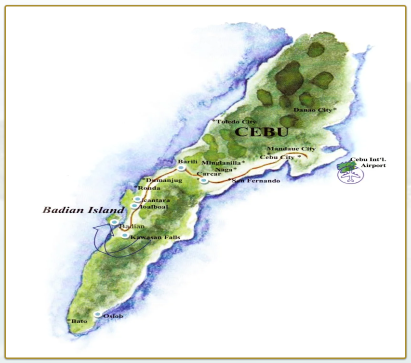

|  | Cebu is a province of the Philippines, in the country’s Central Visayas region, comprising Cebu Island and more than 150 smaller surrounding islands and islets. Its prosperous port capital, Cebu City, retains landmarks from its 16th-century Spanish colonial past, including the Basilica Minore del Santo Niño church and triangular Fort San Pedro. Tops, an observation deck on Mt. Busay, has sweeping views over the city. Cebu is the largest island in the Visayas region, and is particularly rich in Spanish colonial history. The original capital of the Philippines until the 17th century, ‘the Queen of the South’ contains 6 major cities – Cebu, Danao, Lapu-Lapu, Mandaue, Toledo and Talisay. |
Cebu had been the capital in the Philippines during 6years after Spanish immigrated in Cebu. After Spanish–American War in 1898, American governments set up infrastructure during the under rule of America and Cebu have developed as the trade center. During World War 2, Cebu was the main army base of Japan, especially Antoanga and Babak was exposed by bomb. The Philippine was independent from America in1946 and Cebu is now developing together with Manila. Today, cebu are thronged with people as one of the best beach resorts in the world. To this day, Cebu Island still remains a prominent and popular part of the archipelago, boasting the most ethnically diverse population. Its inhabitants are an interesting bunch, made up of Malay, Chinese, Filipino and an ever-growing number of westerners. It’s now considered to be the most dynamic island in the Philippines, attracting native and international tourists in droves.